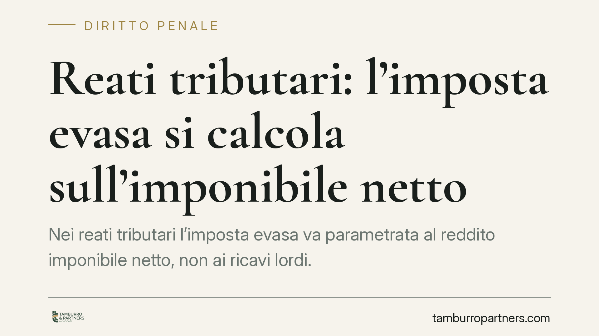

Reati tributari: l'imposta evasa si calcola sull'imponibile netto
Nei reati tributari l'imposta evasa va parametrata al reddito imponibile netto, non ai ricavi lordi. Lo ribadisce la Corte di Cassazione, con un effetto a catena: se cade la soglia di punibilità viene meno anche il reato presupposto dell'autoriciclaggio e il relativo sequestro. Una precisazione che incide sul perimetro della responsabilità penale e sulle strategie difensive.

Il principio affermato dalla Cassazione
La Corte di Cassazione è tornata sul criterio di determinazione dell'imposta evasa nei reati tributari. Il punto è tecnico ma decisivo: l'imposta evasa non si calcola sui ricavi lordi, bensì sul reddito imponibile netto, cioè sui ricavi al netto dei costi deducibili.
La differenza non è nominale. I ricavi rappresentano l'entrata lorda; l'imponibile netto è ciò che residua dopo aver sottratto i costi che la legge consente di dedurre. Secondo la Corte rilevano anche i costi non contabilizzati, a condizione che il contribuente ne fornisca prova. Un costo reale e documentato riduce la base su cui si misura l'evasione, anche se non è transitato in contabilità.
*(Gli estremi della pronuncia richiamata nella fonte vanno verificati prima di qualsiasi utilizzo processuale: si consiglia il riscontro diretto sul testo integrale della sentenza e sull'eventuale massima ufficiale.)*
Soglie di punibilità e calcolo dell'imposta evasa
Il D.lgs. 74/2000 subordina diversi reati tributari al superamento di soglie di punibilità: al di sotto di determinati importi di imposta evasa il fatto non costituisce reato. È qui che il criterio di calcolo diventa centrale.
L'art. 3 del D.lgs. 74/2000 punisce la dichiarazione fraudolenta mediante altri artifici; l'art. 4 punisce la dichiarazione infedele. Sono fattispecie diverse, con soglie e presupposti propri. L'art. 4, in particolare, richiede il superamento congiunto di una soglia riferita all'imposta evasa e di una riferita agli elementi attivi sottratti all'imposizione. Gli importi delle soglie sono stati più volte modificati nel tempo: vanno quindi verificati nella versione vigente alla data dei fatti contestati, perché è quella a rilevare.
Se l'imposta evasa si misura sull'imponibile netto e non sui ricavi, l'importo si riduce. Una riduzione sufficiente può far scendere l'evasione sotto la soglia: in tal caso il fatto esce dall'area penale.
L'effetto a catena sull'autoriciclaggio
L'aspetto più rilevante è la ricaduta sull'autoriciclaggio (art. 648-ter.1 c.p.). Questo reato punisce chi impiega, sostituisce o trasferisce in attività economiche o finanziarie il denaro o i beni provenienti da un delitto che lui stesso ha commesso.
L'autoriciclaggio presuppone, per definizione, un reato presupposto: deve esistere un delitto a monte da cui provengono i proventi reimpiegati. Se il reato tributario non si configura perché l'imposta evasa resta sotto la soglia di punibilità, viene meno il delitto presupposto. E senza presupposto non può sussistere l'autoriciclaggio.
La conseguenza è diretta anche sul piano cautelare: cadendo il reato, viene meno il titolo per il sequestro dei beni collegato a quella contestazione. Si tratta di un effetto a cascata che può modificare l'intero impianto accusatorio.
Implicazioni pratiche
Per imprenditori, professionisti e società sottoposti a verifica fiscale o a procedimento penale, la pronuncia ha un valore concreto. La quantificazione dell'imposta evasa operata dalla Guardia di Finanza o indicata nell'avviso di accertamento non coincide automaticamente con quella rilevante in sede penale.
In particolare, la possibilità di far valere costi reali e documentati, anche non contabilizzati, apre uno spazio difensivo che va presidiato fin dalle prime fasi. La prova dei costi diventa parte integrante della strategia, non un adempimento secondario.
Cosa fare in concreto
- Verificare il criterio di calcolo dell'imposta evasa contestata: controllare se è stata parametrata ai ricavi lordi o all'imponibile netto.
- Raccogliere la documentazione dei costi deducibili, inclusi quelli non contabilizzati, predisponendo prove idonee a dimostrarne l'effettività.
- Riscontrare le soglie di punibilità vigenti alla data dei fatti per la fattispecie contestata (art. 3 o art. 4 D.lgs. 74/2000), distinguendo con precisione l'una dall'altra.
- Valutare l'impatto sull'eventuale autoriciclaggio: se il reato tributario presupposto non regge, verificare la tenuta del capo ex art. 648-ter.1 c.p. e dei sequestri collegati.
- Richiedere il riesame delle misure cautelari laddove il ridimensionamento dell'imposta evasa incida sul titolo del vincolo.
Resta ferma la necessità di esaminare la singola contestazione: fattispecie, importi e soglie vanno calati nel caso concreto e sulla normativa vigente al momento dei fatti.
---
Contributo informativo a cura di Tamburro & Partners Avvocati - Avv. Giuseppe Tamburro. Non costituisce parere legale.
Ogni condominio ha una storia a sé.
Se gestisci un'amministrazione e vuoi un confronto su una specifica questione condominiale, scrivi allo studio. Ti rispondiamo entro un giorno lavorativo.